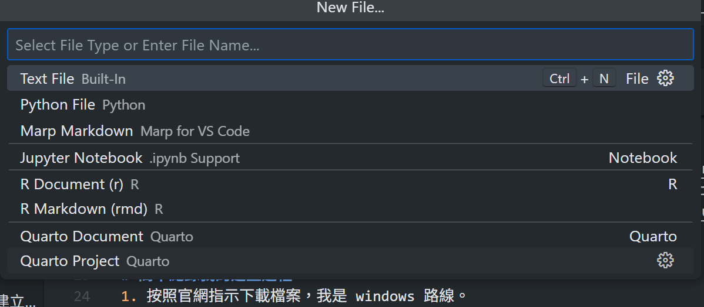
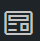

緣起
很早以前就想建立自己的小小網站了，雖然在這之前，我用過 Blogger 寫文章，不過用得不是很順手，後來忘記帳密就沒再用了。到近期我才發現自己比較偏好用特定指令寫文章，這件事還是因為要寫數學筆記辦了 hackmd 才發現的。
不得不說， hackmd 是一個非常好用的網站，不只可以用自己熟悉的 markdown 語法寫文章，也可以練習當時還不怎麼熟悉的 html 語法，同時跟一般的線上 markdown editor 相比，它既可以用 code 畫心智圖跟流程圖，也可以發佈成網站。一度想說就這樣繼續用下去吧，但它對我來說有個小小的缺點：寫的文章越長越容易卡頓。
於是我開始異想天開：如果是自己建立的網站應該就不會卡了吧？
在進入軟體業之前，我對網頁設計跟原理都沒有概念，進入軟體業之後雖然稍微有了一點”常識”，也接觸一些諸如 gitbook 等用來寫說明文件非常方便的軟體服務，但對於網頁是怎麼從寫成到上線，還是只有很模糊的：「呃…總之就是先在 localhost 寫一寫，再丟到測試機檢查，沒問題再丟到正式機吧？」過程中會用到的技術幾乎是0概念，但我還是很興奮地去研究各種可能的方案。
第一個閃過的想法，是從頭學 html 跟 css 語法，自己刻一個網站，但我很快就發現非常花時間，而且要用其他引擎渲染 markdown 數學符號，實在是太麻煩。第二個想法是用 C# 建立網站，也是有同樣的問題，再加上 C# 的語法長得實在是看得不習慣(也可能是我只喜歡語法簡潔的東西，像是 markdown 或是 python，方案二也放棄了。
第三個想法，就是用 python 或是 r 的相關套件來建立模板，有需要再自己改模板就好，不過上了研究所後會用來做筆記的檔案類型不只 .md 檔，還有 .ipynb、.rmd、.r等等，雖然很多都是 markdown 的延伸，但還是想要盡可能的在不改變副檔名的前提下整合他們。同時又想找美觀又可以調整 light/ dark theme 的模板來使用。就這樣多方考慮後我選擇了 Quarto 來作為我的模板，主要原因是官網上提供的範例無論是在提供的功能還是美觀方面看起來都非常吸引人！也支援前述提到的檔案格式，再加上官網上的教學看起來相當易懂，於是就來用用看了。想要看完整教學的可以的點此。
簡單紀錄我的建立過程
- 按照官網指示下載檔案，再點選常用的 IDE，我是 Windows / Vscode 路線。
- 按照官網指示，在 Vscode 安裝 Quarto 的 Extension。
- 在Vscode的環境下新增檔案(File/New File…)，點選 “Quarto Project”，並選擇你想建立的網站類型，我是選擇 Blog Project。 
- Quarto 會自動生出設定sample檔。
生成sample後先暫時不要動它，來試跑看看，也就是在本機(localthost)檢視網頁！
在本機(localthost)檢視網頁
檢視網頁有2種方法:
- 第一種：在 Terminal cd 到目前 Project 的資料夾，使用
quarto preview指令。這會另外開啟常用瀏覽器檢視，指令碼複製如下：
quarto preview- 第二種：在 Vscode 右上角有個  的符號，點擊可在右側 preview 網頁渲染結果。
兩種方法都不錯，我覺得第一種方法適合螢幕小或想要檢視不同瀏覽器運作情況的人，第二種適合電腦螢幕大時使用，看個人需求了。
知道怎麼檢視網頁後，接下來就可以認識 Blog Project 的架構跟調整設定了。
Quarto Blog Project 的基本架構筆記
基本架構大概像這樣：
Quarto Blog Project ← 專案資料夾
├── _quarto.yml ← 整體設定（佈景主題、導覽列）
├── index.qmd ← 首頁
├── about.qmd ← 關於頁面
├── posts/ ← 文章存放區
│ └── post1/ ← 單篇文章的資料夾
│ ├── index.qumd
│ └── image.png
├── _docs/ ← 用 github page 部署時會出現的資料夾 （自動產生）
└── _site/ ← 渲染後輸出的網站內容（自動產生）就像許多個人網站的架構那樣，屬於 Blog Project 資料夾的最外層會有個用來當首頁的index.qmd，.qmd是 Quarto 的檔案格式之一，我個人的理解是類似 RMarkdown 可以寫 markdown 語法也可以跑程式，但它可以更沒有障礙的跑 python 的程式碼。1此外還有主要用來控制顯示網站 head 部分的 _quarto.yml，以及自我介紹用的about.qmd跟可以自定義 CSS 風格的 styles.css。
存放文章的地方在資料夾 posts裡，每份文章都以資料夾的形式包著。文章的內容本體也是.qmd檔，可以直接修改，這篇文章也是用.qmd檔撰寫的。另外，文章資料夾的命名可以隨意，因為網站在渲染過程中會直接讀取posts下的所有資料夾，資料夾本身的名稱不會影響讀取。
功能調整
首頁文章按日期最新排列
若想所有文章按日期最新排列，可以在 Project 下最外層的 _quarto.yml 調整，首先撰寫文章的 index.qmd 的YMAL都要設定日期，這部分預設模板有給：
date: "2025-07-23" 再來是修改最外層的_quarto.yml，新增下面語法
listing:
contents: posts
sort: "date desc" # 日期最新的在前面需要注意 yaml 的順序跟階層關係很重要，順序跟階層不對會報錯。
light / dark theme 切換
一樣修改最外層的，語法如下：
format:
html:
theme:
light: flatly
dark: darkly這樣網站的右上角會出現一個小小的切換鈕，但個人覺得這個設計不太直觀，有機會再來研究看看可以怎麼改。
插入目錄在每篇文章
一樣在最外層的 _quarto.yaml 的 format:層下輸入
toc: true
toc-location: body
toc-depth: 2
toc-title: "目錄"
number-sections: false第一個語法會召喚開啟文章目錄，第二個則是目錄出現位置，body是文章開頭，另有left(文章左側)跟right(文章右側)可選。
第三個是文章目錄在直接顯示時要顯示 header 幾，這裡的 2 表示在網頁剛載入時，目錄會顯示文章到 header 2 (markdown 語法 ## )為止的標題。
注意如果前面的
toc-location設定為left或right，用滑鼠點擊大 header 還是可以展開底下所有的小 header，只是初始載入會隱藏。
number-sections則是要不要幫每個 header 標上編號，格式按 header 大小為 1、1.1、1.1.1…，以此類推，我覺得很醜所以用false取消編號。如果這個語法沒有設定，會導致有些檔案格式的文章如.qmd不編號，.md卻編號的情況，因此如果要統一還是要強制設定。
部署到 github page 上
這裡實在是困難重重(對我來說)，只能先筆記下摸索出來的方法。
先假設前置所需的 git 跟 Github 都設定完成。
首先打開 Terminal ， cd 到 Project 資料夾，key 入:
quarto render成功的話 terminal 會出現以下命令：
Output created: docs\index.html我的不知道為什麼，第一次生成一個叫 doc 的資料夾，但 Github Page 只認 docs，所以生成後要修改檔名。
然後在最外層的_quarto.yml設定：
project:
type: website
output-dir: docs接著按照先前學過的，檢查確認 localhost 的 preiew 沒問題後，將本地端 push 到 Github repository。
再來前往 Github repository setting / Pages ，將設定改成mian\docs。等待幾分鐘後，如果成功Pages的頁面會生成網址，可以點進去檢查。
延伸閱讀
本文只記錄了我的建立過程，很多 Quarto 可以玩的設定都沒紀錄，如果還想看看其他人怎麼玩的話：
Footnotes
rmd可以使用python，但其原理是要通過R的套件使用，但qmd則是可以直接用python處理。↩︎